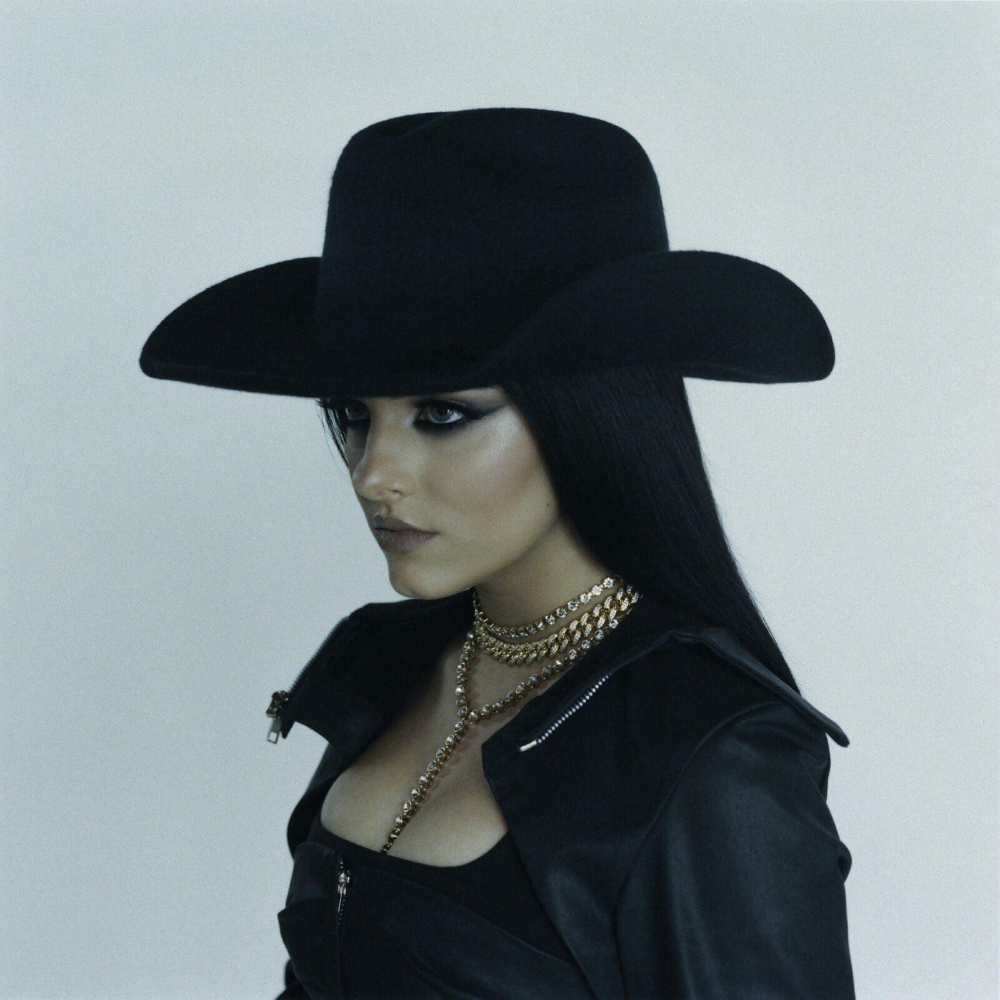

Jessie Murph
Born: 22 September 2004
Age:
Years Active: 2021–present
Genre/s: Pop, country, trap, blues
Label/s: Disruptor, Columbia
Jessie Murph (born September 22, 2004) is an American singer and songwriter. She was discovered after uploading vlogs and covers to TikTok and YouTube. Her music style spans multiple genres, with critics describing Murph's sound as a mix of elements from country, pop, and trap genres, while rooted in hip-hop.
Murph gained popularity with the release of her RIAA certified hits singles "Always Been You" (2021), "Pray" (2022), "Heartbroken" with Thomas Wesley and Polo G (2023), "Wild Ones" with Jelly Roll (2023), and the top 20 single, "Blue Strips" (2025). As well, after working with mainstream artists such as Diplo, Lil Baby, Maren Morris, Gucci Mane, Teddy Swims, and Sexyy Red, among others.
As of July 2025, Murph has released one mixtape Drowning (2023), and two studio albums, That Ain't No Man That's the Devil (2024) and Sex Hysteria (2025).

Blue Strips
Jessie Murph

Touch Me Like A Gangster
Jessie Murph

1965
Jessie Murph

I'm Not There For You
jessie murph